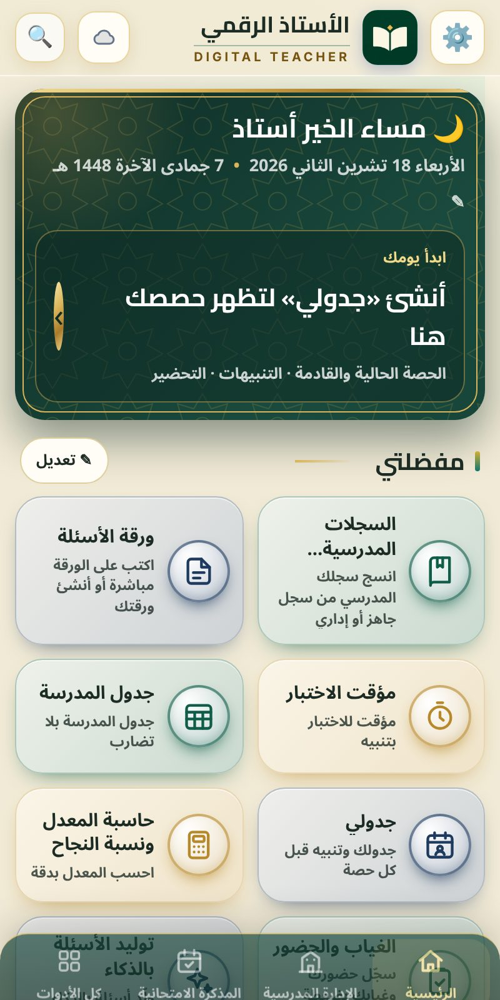
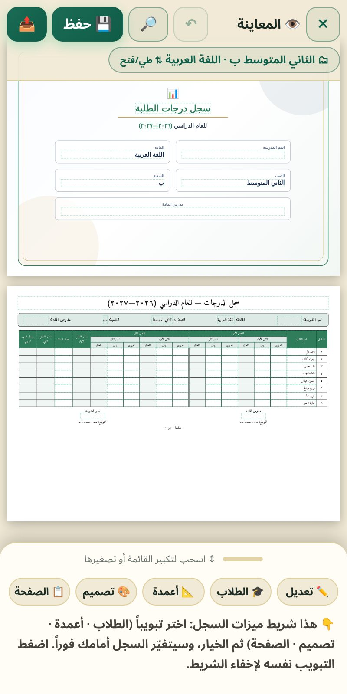

ماذا يقدّم التطبيق؟
📒 السجلات المدرسيةسجل درجات جاهز للطباعة، تغيّر فيه الألوان والخط والأعمدة وترى النتيجة فوراً.
🗓️ جدول المدرسة وجدوليجدول بلا تضارب بين المدرسين، وتنبيه قبل كل حصة.
📝 ورقة الأسئلةاكتب الأسئلة أو اكتب على ملف Word موجود، وصدّرها جاهزة للطباعة.
🧮 حاسبة المعدل والنجاحتحسب المعدل ونسب النجاح بدقة.
✅ الغياب والحضورتسجيل سريع وتقارير جاهزة.
⏱️ مؤقت الاختبارمؤقت بتنبيه لقاعة الاختبار.
🤖 مساعد ذكييساعد في توليد الأسئلة وصياغتها (اختياري).
📄 Word وExcel وPowerPointأدوات للكتابة والتصدير بصيغ الملفات المعروفة.
لقطات من التطبيق


خصوصيتك
بيانات الطلبة والدرجات تبقى على جهازك. لا إعلانات ولا تتبع. اقرأ سياسة الخصوصية.